RoonPilot
Drehring, Touch-Bedienung und Zonenverwaltung bleiben die einzige Benutzeroberfläche.
IR Bridge 1.0.0 für RoonPilot 2.0.2. Die offizielle Firmware und der Bridge-Webinstaller sind verfügbar. Bereits gekoppelte Bridges lassen sich über RoonPilot aktualisieren; die Installation wird immer von dir gestartet.
Optionale Hardware-Erweiterung
RoonPilot IR Bridge ergänzt ausgewählte Roon-Zonen um gelernte Infrarotbefehle für Lautstärke, Stummschaltung und Ein/Aus – ohne RoonPilot umzubauen oder einen zusätzlichen Dienst zu installieren.
Installationsvideo ansehen01
Für jeden physischen Ausgang wird unabhängig festgelegt, ob Roon oder die Bridge seine Befehle erhält.
Drehring, Touch-Bedienung und Zonenverwaltung bleiben die einzige Benutzeroberfläche.
Empfängt die Aktion ihrer zugeordneten Zone oder ihres Gruppenmitglieds, taktet die gelernten Frames und steuert den Sender.
DAC, Verstärker oder Aktivlautsprecher empfangen denselben Befehl wie von der Originalfernbedienung.
Ein konkretes Beispiel
Bei einem RME ADI-2 DAC an einer WiiM-Zone kann RoonPilot die originalen RME-Infrarotbefehle senden, statt die digitale Lautstärke von Roon zu verändern. Damit regelt der DAC selbst und seine Auto-Ref-Level-Funktion bleibt erhalten.
02
Die Bridge bleibt als kleines Modul beim Audiogerät, während RoonPilot Einrichtung, Profile, Routing und Updates verwaltet.
Jede Factory-Installation erzeugt eine eindeutige RPB-…-Kennung. Sie wird bewusst in RoonPilot ausgewählt und bestätigt damit das erste verschlüsselte Pairing.
RoonPilot führt durch die Aufnahme von Lautstärke, Mute und getrennten Power-Aktionen. Bekannte Protokolle werden analysiert; unbekannte Signale behalten ihre Roh-Timings.
In der Nähe hat BLE Vorrang. Ist es nicht erreichbar, übernimmt bei aktivierter Option das authentifizierte lokale WLAN und wechselt später automatisch zurück.
Ist Bridge & Bluetooth deaktiviert, bleiben nach dem Neustart Bluetooth, Scanning, Bridge-Updateprüfungen und sämtliche Bridge-Hintergrundaufgaben ausgeschaltet.
03
Die Bridge benötigt weder eine eigene App noch eine eigene Weboberfläche, Cloud, Daemon oder Zusatzdienst. Vom ersten Pairing bis zum signierten Firmwareupdate wird jede normale Aufgabe in RoonPilot verwaltet.
Vertrauen im Nahbereich. Reichweite im ganzen Zuhause.
Die Ersteinrichtung beginnt immer in der Nähe über Bluetooth LE. RoonPilot sucht nach der bei der Factory-Installation erzeugten RPB-…-Kennung, lässt gezielt die richtige Bridge auswählen und stellt eine verschlüsselte, gebondete Verbindung her. Dieser bewusste Erstkontakt bildet die Vertrauensbasis für alles Weitere.
Allow Wi-Fi fallback ist ein ausdrücklich optionaler zweiter Schritt. Solange die vertraute BLE-Verbindung aktiv ist, übermittelt RoonPilot die aktuellen 2,4-GHz-Zugangsdaten und einen neu erzeugten 256-Bit-Anwendungsschlüssel an die Bridge. BLE behält Vorrang. Bei bestätigten BLE-Ausfällen kann das authentifizierte lokale WLAN übernehmen; zurück zu BLE geht es erst nach erfolgreicher Stabilitätsprüfung, nicht schon bei einem guten Signalwert.
Ein RoonPilot kann bis zu vier Bridges speichern. Im normalen Modus Automatische Zonensteuerung bestimmt die gewählte Zone die benötigten IR-Routen. Bei einer Roon-Gruppe überwacht und bedient RoonPilot alle Bridges, die ihren physischen Mitgliedern zugeordnet sind. Manage darf eine andere Bridge vorübergehend per BLE verwalten, während aktive Zonen- oder Gruppenrouten über geprüftes WLAN weiterarbeiten. Es gibt höchstens einen BLE-Link, aber mehrere unabhängig authentifizierte WLAN-Wege.
Für mehrere Bridges genügt ein einziger IR-Empfänger an einer Lern-Bridge. Auf ihr werden die Profile für alle Zonen angelernt; RoonPilot speichert sie dauerhaft und überträgt sie anschließend auch auf Ziel-Bridges ohne Empfänger.
Die Bridge-Seite folgt der globalen Deutsch/Englisch-Einstellung von RoonPilot. Roon-Metadaten, physische RPB-…-Kennungen und selbst vergebene Namen bleiben unverändert.
Nichts davon wird ins Internet geöffnet: Transportwahl, Verbindungszustand, Signalstärke und Wiederherstellung bleiben auf derselben lokalen RoonPilot-Seite sichtbar und testbar.
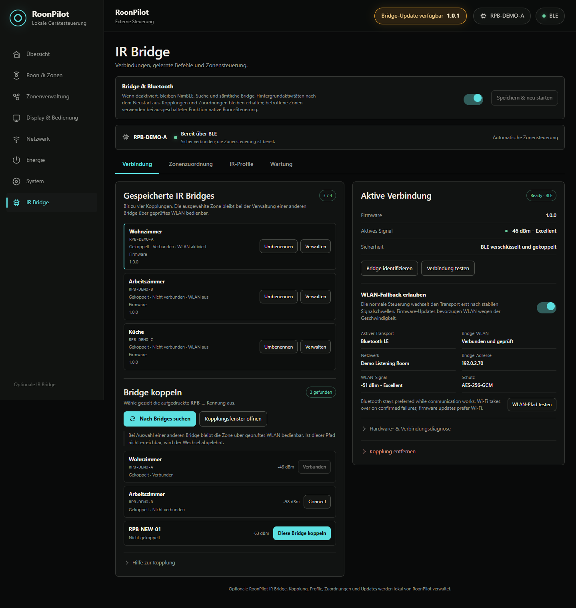
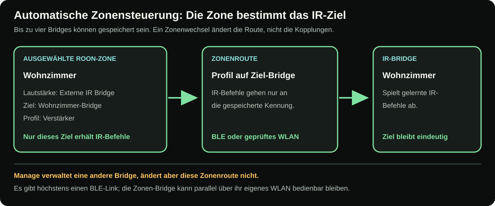
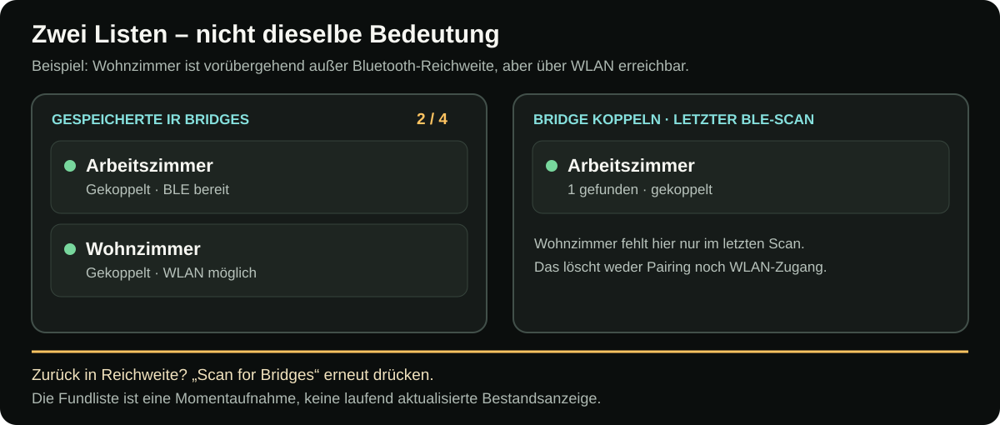
Bridge in der Nähe suchen, eindeutige Kennung vergleichen und die verschlüsselte Kopplung ohne Öffnen des Gehäuses abschließen.
Benannte Geräteprofile anlegen, jeden Befehl zweimal erfassen, erkannte Protokolldaten prüfen und sofort an der echten Hardware testen.
Native Roon-Lautstärke, externe IR-Regelung und bewusst deaktivierte Steuerung kombinieren – jeweils mit eigenem Encoder-Schritt und optionalen Power-/Mute-Tasten.
Einstellungen, Routen und jedes benannte IR-Profil einmal sichern, mit getrennten Bridge-Zuordnungen. Profile nach dem Koppeln auch auf Ersatz-Bridges oder mehrere Bridges übertragen.
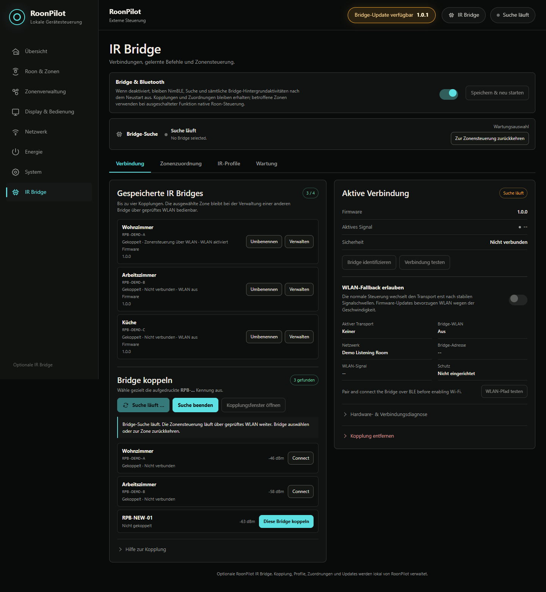
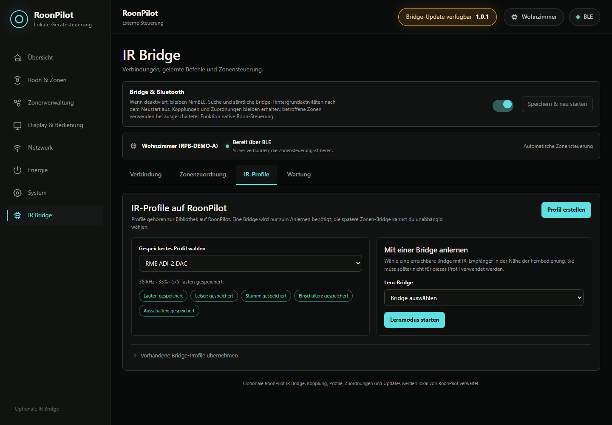
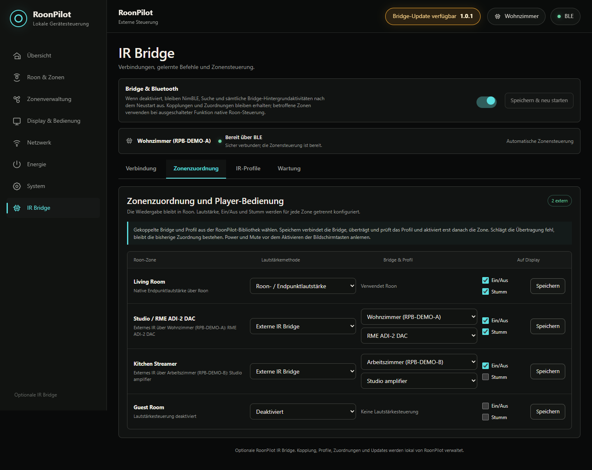
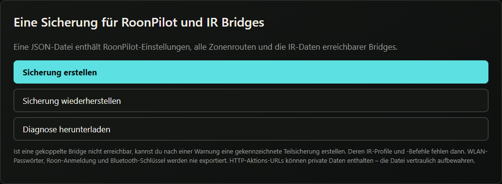
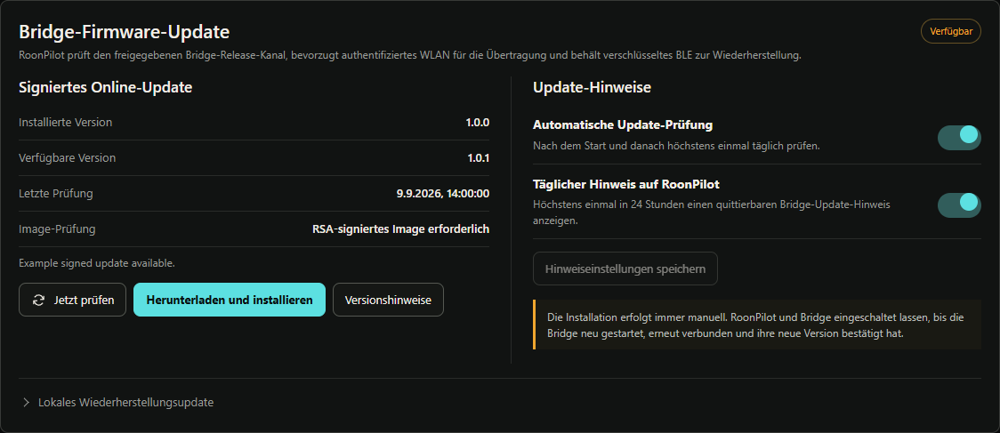
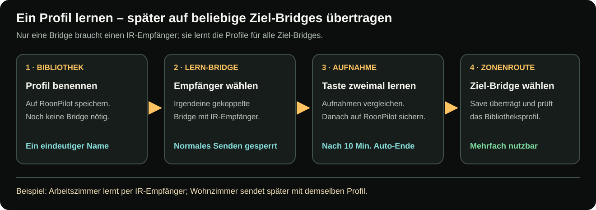
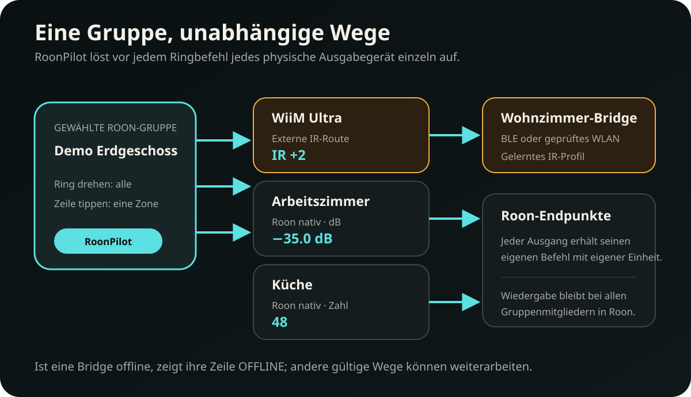
Die Automatik folgt jedem IR-Mitglied der ausgewählten Roon-Gruppe, nicht nur ihrem führenden Ausgang.
Eine nahe Bridge kann BLE verwenden, während andere Gruppenmitglieder über authentifiziertes WLAN arbeiten.
Eine Offline-Bridge macht nur ihre Route unbenutzbar und übernimmt niemals das Profil eines anderen Mitglieds.
Ausfälle und Neuverbindungen werden je Bridge gemeldet, ohne Display oder Ereignislog zu überfluten.
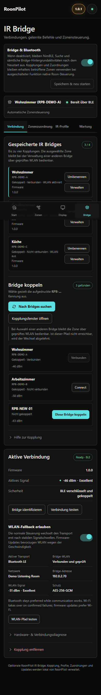
Dieselbe lokale Oberfläche im ganzen Zuhause
Die responsive Bridge-Seite wird von RoonPilot selbst ausgeliefert. Auf Desktop, Tablet oder Smartphone lassen sich der aktive Transport prüfen und sämtliche Erweiterungsfunktionen verwalten. Die Bridge bleibt das unscheinbare Modul beim Audiogerät – bedient wird weiterhin RoonPilot.
Alle Verwaltungsschritte in der AnleitungAlle Befehle bleiben im lokalen Netz. Die Bridge ist ein kleines Hardware-Modul und kein weiterer zu wartender Dienst.
04
Der Zielaufbau nutzt ein kleines ESP32-S3-Board, einen IR-Empfänger zum Lernen und einen leistungsfähigen Sender für zuverlässige Reichweite.
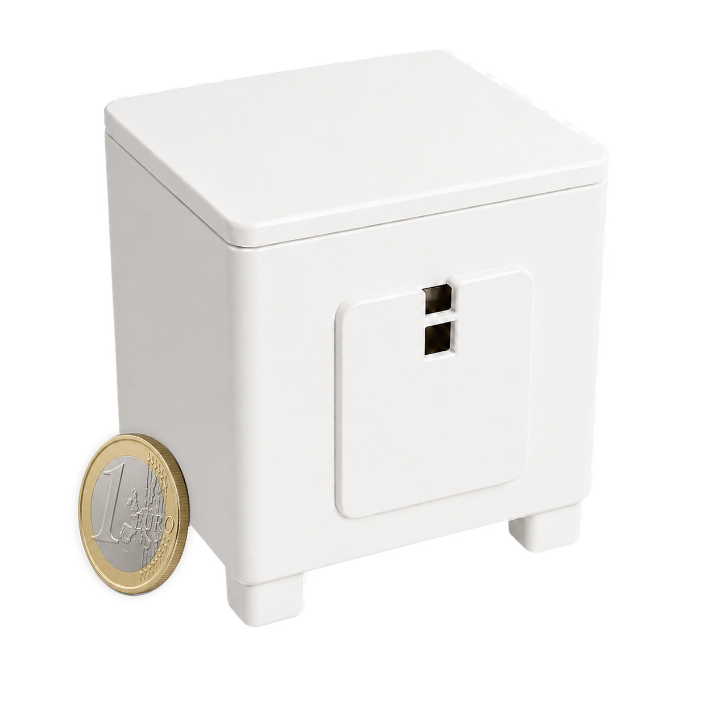
Der unterstützte Sender ist der Adafruit High Power Infrared LED Emitter 5639. Reichweite, Ausrichtung der Sender und Gehäusetemperatur in der Installation prüfen; Raumreflexionen und verdeckte Aufstellung können die IR-Zuverlässigkeit verändern.
Adafruit IR-Sender Offizielle Waveshare-Boarddokumentation AZ-Delivery IR-Empfänger Angebot des Controllerboards05
Die kleine RGB-LED sitzt auf dem ESP32-S3-Zero. Im normalen Betrieb bleibt sie aus; der dauerhafte Verbindungsstatus steht auf der Bridge-Seite von RoonPilot.
| LED-Muster | Bedeutung und erforderliche Reaktion |
|---|---|
| Aus | Normaler Betrieb. Eine dunkle LED bedeutet nicht, dass die Bridge ausgeschaltet oder offline ist. |
| Langsam blau pulsierend | Ein Pairingfenster ist geöffnet; die Bridge kann in RoonPilot gesucht und bewusst gekoppelt werden. |
| Zweimal kurz blau | Die verschlüsselte Kopplung wurde erfolgreich abgeschlossen. |
| Wiederholt kurz blau, etwa 1,5 Sekunden | Bridge identifizieren wurde in RoonPilot ausgelöst. |
| Orange pulsierend | Die Lern-Bridge wartet auf ein IR-Signal oder zeichnet es gerade auf. Normales IR-Senden ist während des Lernens gesperrt. |
| Zweimal kurz grün | Zwei passende IR-Aufnahmen wurden gespeichert. Nach violettem Pulsieren bedeutet Grün: Firmware angenommen, Neustart folgt. |
| Zweimal kurz rot | IR-Lernen fehlgeschlagen oder abgelaufen. Nach violettem Pulsieren bedeutet Rot: Firmwareübertragung oder -prüfung fehlgeschlagen. |
| Violett pulsierend | Firmware wird übertragen oder geprüft. Stromversorgung keinesfalls trennen. |
Nach einer kurzen Bestätigung geht die LED wieder aus oder zeigt erneut ein noch offenes Pairingfenster. Wird das IR-Lernen abgebrochen, endet das orange Signal ohne rote Fehlermeldung. Ausführliche Erklärung in der Bridge-Anleitung öffnen.
06
Gehäusekörper, Deckel, Senderkappe und zwei alternative Fußlängen nehmen die getestete Bridge-Hardware auf; USB, Statuslicht und Infrarotwege bleiben nutzbar.
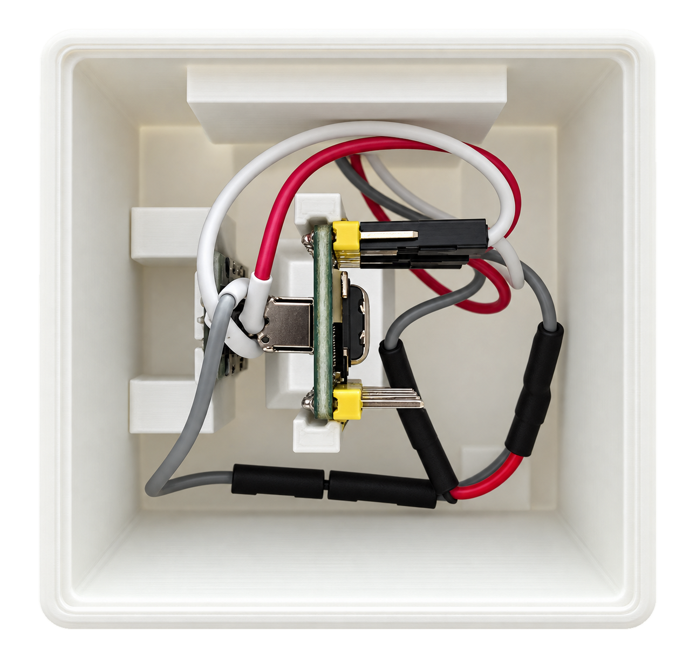
Fünf Modelle zum Herunterladen
Entweder den kurzen Fußsatz für kompakte USB-C-Stecker oder den längeren Fußsatz für zusätzliche Bodenfreiheit verwenden – niemals beide Längen mischen. Ziel-Bridges benötigen keinen Empfänger: Eine einzige Lern-Bridge mit Empfänger kann die benannten Profile für alle gekoppelten Geräte aufnehmen.
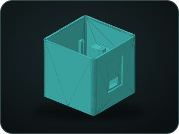
Bridge_Cube.stlGehäusekörper · einmal drucken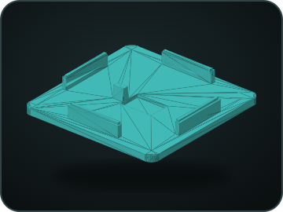
deckel.stlDeckel · einmal drucken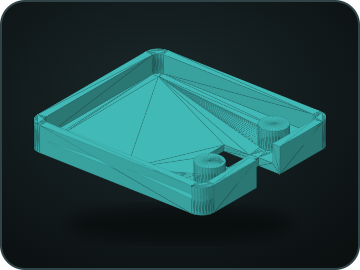
ir_sender_kappe.stlIR-Senderkappe · einmal drucken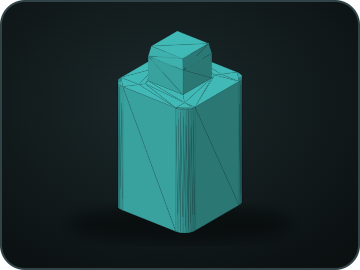
fuss_1x_drucken_4x.stlLängerer Fuß für lange USB-C-Stecker · viermal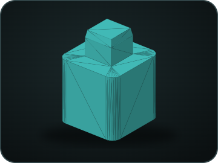
fuss_1x_drucken_4x_KURZ.stlKurzer Fuß für kompakte USB-C-Stecker · viermalMöglichst ein USB-C-Kabel mit kurzem Steckergehäuse verwenden. Ist der Kabelstecker dennoch zu lang, schafft der längere Fußsatz zusätzliche Bodenfreiheit. Immer vier gleiche Füße verwenden. Vor dem Aufsetzen des Deckels USB trennen, beide IR-Öffnungen freihalten und den Reichweitentest am geschlossenen Gehäuse wiederholen.
07
Die erste USB-Installation erfolgt separat; die gesamte Alltagskonfiguration übernimmt anschließend RoonPilot.
Empfänger, Sender und gemeinsame Masse nach der geprüften Pinbelegung anschließen.
Desktop-Chrome oder Edge verwenden. Factory löscht Kennung, Pairing und Profile.
Bridge & Bluetooth aktivieren, Pairing starten und die angezeigte RPB-Kennung bestätigen.
Eine beliebige Lern-Bridge mit Empfänger verwenden; die spätere Ziel-Bridge benötigt keinen Empfänger.
In Zone Management den IR-Pfad und die eigene Anzahl von Encoder-Schritten wählen.
Eine gemeinsame Einrichtungssicherung erstellen und spätere signierte Updates direkt über RoonPilot installieren.
08
Installierte und verfügbare Version erscheinen auf der Bridge-Seite und auf Wunsch als quittierbare Meldung am Gerät.
Zwei unabhängige Prüfungen
Keine unbeaufsichtigte Installation: RoonPilot darf nach einer neuen Bridge-Version suchen und darauf hinweisen. Download und Installation beginnen erst nach ausdrücklicher Bestätigung.
HTTPS-Manifest, Projekt, Board, Protokoll, Mindestversion, Dateigröße, eingebettete Version und SHA-256 werden zuerst geprüft.
Die Bridge verifiziert Blockfolge, Größe, SHA-256 und RSA-Signatur, bevor sie die inaktive OTA-Partition auswählt.
Nach dem Neustart wartet RoonPilot, bis sich die Bridge mit exakt der angeforderten Version zurückmeldet.